# parametros para imagens
knitr::opts_chunk$set(
fig.width = 8,
fig.asp = 0.618,
fig.retina = 3,
dpi = 300,
out.width = "80%"
)Avaliando Series Temporais
Séries Temporais
Nestes exemplos vamos usar algumas bibliotecas do R que são usadas na análise de séries temporais financeiras e também na sua modelagem.
Obtendo e Visualizando uma ST
Vamos inicialmente usando a biblioteca (pacote) quantmod fazer um download dos preços da Petrobras (PETR4) entre 2000 e 2022.
A biblioteca quantmod depende dos pacotes xts e do zoo que são dois pacotes usados para manipular dados de series temporais.
library(quantmod)Carregando pacotes exigidos: xtsCarregando pacotes exigidos: zoo
Attaching package: 'zoo'The following objects are masked from 'package:base':
as.Date, as.Date.numericCarregando pacotes exigidos: TTRRegistered S3 method overwritten by 'quantmod':
method from
as.zoo.data.frame zoo getSymbols("PETR4.SA",from="2000-01-01", to="2022-09-30")Warning: PETR4.SA contains missing values. Some functions will not work if
objects contain missing values in the middle of the series. Consider using
na.omit(), na.approx(), na.fill(), etc to remove or replace them.[1] "PETR4.SA"head(PETR4.SA) PETR4.SA.Open PETR4.SA.High PETR4.SA.Low PETR4.SA.Close
2000-01-03 5.875 5.875 5.875 5.875
2000-01-04 5.550 5.550 5.550 5.550
2000-01-05 5.494 5.494 5.494 5.494
2000-01-06 5.475 5.475 5.475 5.475
2000-01-07 5.500 5.500 5.500 5.500
2000-01-10 5.613 5.613 5.613 5.613
PETR4.SA.Volume PETR4.SA.Adjusted
2000-01-03 35389440000 2.139588
2000-01-04 28861440000 2.021228
2000-01-05 43033600000 2.000833
2000-01-06 34055680000 1.993914
2000-01-07 20912640000 2.003018
2000-01-10 19563520000 2.044172# A biblioteca tem uma forma diferenciada de apresentação das series financeiras
chartSeries(PETR4.SA,theme="white")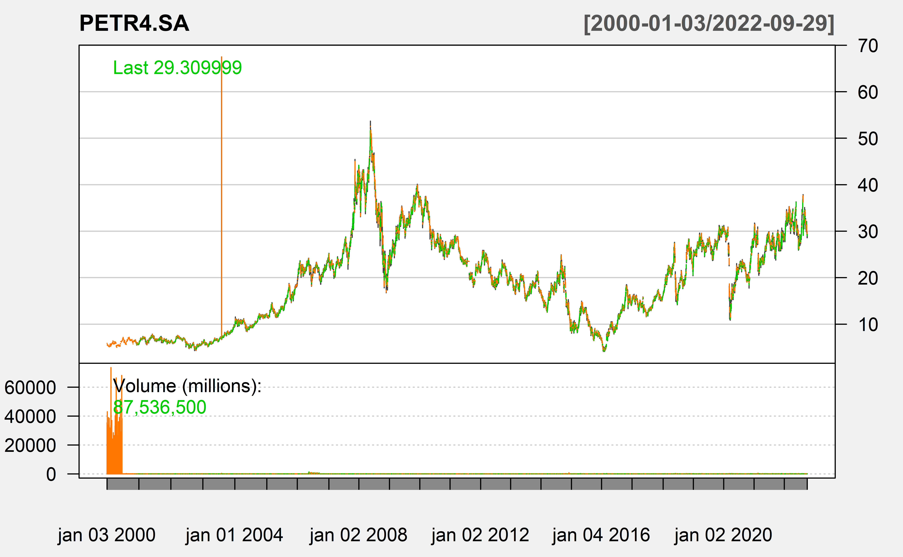
Veja que os dados recebidos tem valores de abertura (open), alta (high), baixa (low) e fechamento (close)
summary(PETR4.SA) Index PETR4.SA.Open PETR4.SA.High PETR4.SA.Low
Min. :2000-01-03 Min. : 4.20 Min. : 4.27 Min. : 4.120
1st Qu.:2005-07-04 1st Qu.:10.15 1st Qu.:10.35 1st Qu.: 9.969
Median :2011-03-28 Median :19.09 Median :19.39 Median :18.765
Mean :2011-04-09 Mean :18.92 Mean :19.20 Mean :18.617
3rd Qu.:2017-01-03 3rd Qu.:26.05 3rd Qu.:26.43 3rd Qu.:25.650
Max. :2022-09-29 Max. :67.50 Max. :67.50 Max. :51.950
NA's :1 NA's :1 NA's :1
PETR4.SA.Close PETR4.SA.Volume PETR4.SA.Adjusted
Min. : 4.20 Min. :0.000e+00 Min. : 1.593
1st Qu.:10.11 1st Qu.:2.113e+07 1st Qu.: 4.263
Median :19.10 Median :3.374e+07 Median : 8.625
Mean :18.89 Mean :5.644e+08 Mean : 8.904
3rd Qu.:26.00 3rd Qu.:5.434e+07 3rd Qu.:12.128
Max. :52.51 Max. :7.356e+10 Max. :34.480
NA's :1 NA's :1 NA's :1 Vamos selecionar somente o fechamento (close)
Para trabalhar com somente uma das series vamos selecionar sua coluna de dados
PETR4.SA.Close <- PETR4.SA[,"PETR4.SA.Close"]
chartSeries(PETR4.SA.Close,theme="white")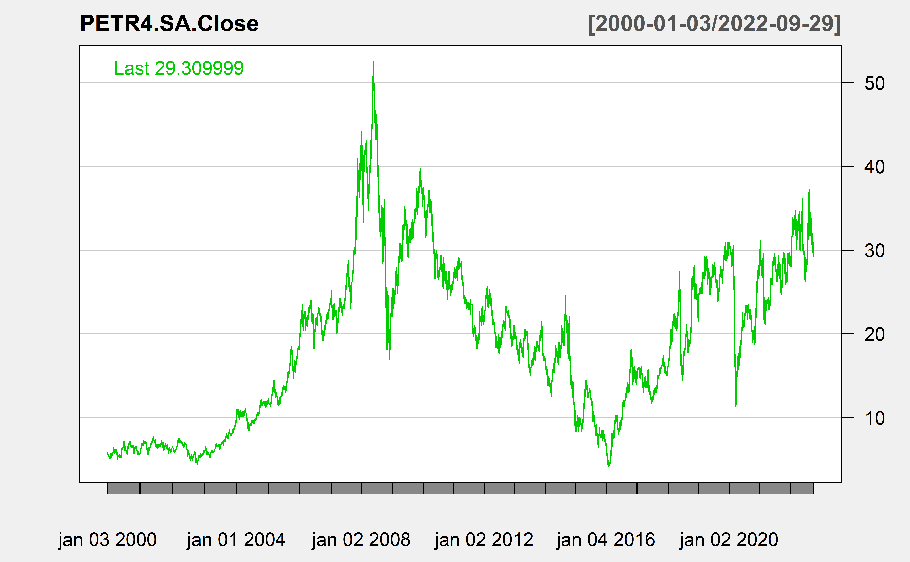
Podemos extrair somente um ano?
Vamos usar os dados de 2000.
PETR4_2000 <- PETR4.SA.Close["2000"]
chartSeries(PETR4_2000,theme="white")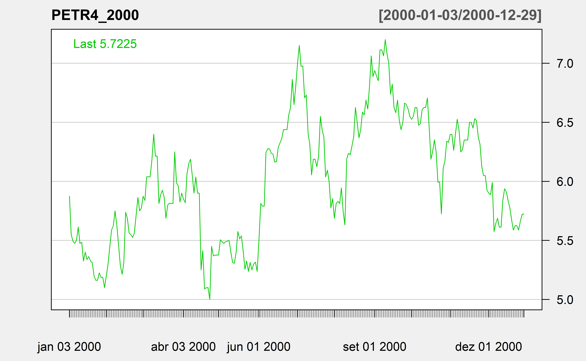
Podemos extrair um intervalo?
Vamos usar os dados de 2000 a 2001.
PETR4_2000_2001 <- PETR4.SA.Close["2000/2001"]
chartSeries(PETR4_2000_2001,theme="white")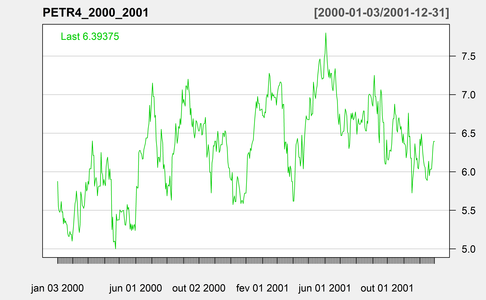
Vamos trabalhar com outro intervalo
Vamos usar dados de set/21 a set/22.
PETR4.SA.Close <- PETR4.SA.Close["2021-09-01/2022-09-30"]
chartSeries(PETR4.SA.Close,theme="white")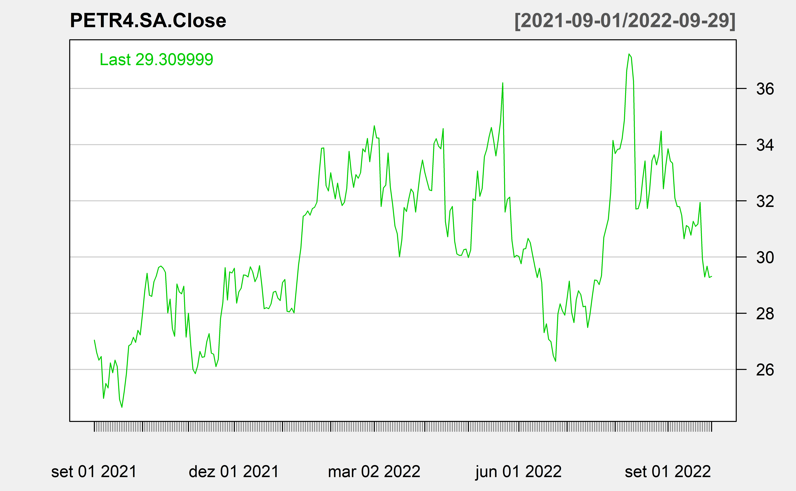
Visualizando o início e o fim da serie
Aqui vamos usar funções da xts visualizar diferentes periodos.
first(PETR4.SA.Close, "month") PETR4.SA.Close
2021-09-01 27.04
2021-09-02 26.60
2021-09-03 26.33
2021-09-06 26.46
2021-09-08 24.97
2021-09-09 25.50
2021-09-10 25.34
2021-09-13 26.23
2021-09-14 25.88
2021-09-15 26.33
2021-09-16 26.10
2021-09-17 24.93
2021-09-20 24.65
2021-09-21 25.21
2021-09-22 25.85
2021-09-23 26.84
2021-09-24 26.90
2021-09-27 27.14
2021-09-28 26.96
2021-09-29 27.39
2021-09-30 27.23last(PETR4.SA.Close, "6 weeks") PETR4.SA.Close
2022-08-22 32.41
2022-08-23 33.44
2022-08-24 33.64
2022-08-25 33.28
2022-08-26 33.64
2022-08-29 34.48
2022-08-30 32.43
2022-08-31 33.23
2022-09-01 33.85
2022-09-02 33.42
2022-09-05 33.34
2022-09-06 32.10
2022-09-08 31.80
2022-09-09 31.79
2022-09-12 31.48
2022-09-13 30.65
2022-09-14 31.12
2022-09-15 31.06
2022-09-16 30.78
2022-09-19 31.27
2022-09-20 31.09
2022-09-21 31.17
2022-09-22 31.94
2022-09-23 29.94
2022-09-26 29.29
2022-09-27 29.67
2022-09-28 29.27
2022-09-29 29.31Usando o pacote astsa
Vamos usar algumas funcionalidades do pacote astsa que permite visualizações e modelagem de series temporais.
library(astsa)
lag1.plot(PETR4.SA.Close,12, col=astsa.col(4, .3), pch=20, cex=2)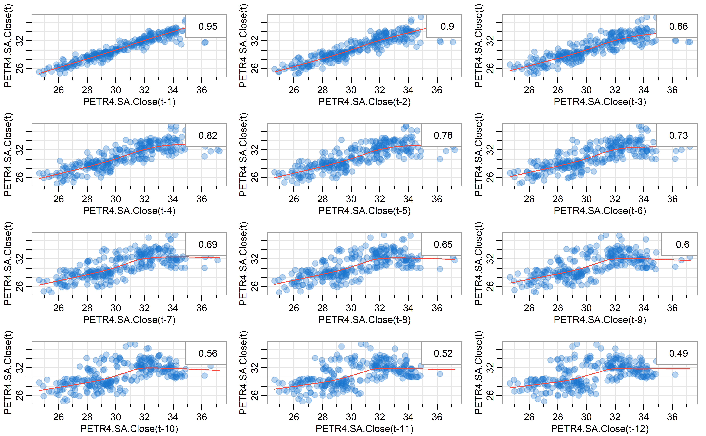
Esta série é um ruído branco?
Primeiro vamos ver graficamente o FAC/ACF e a FACP/PACF e depois vamos usar o teste de Box-Pierce e Ljung-Box.
acf2(PETR4.SA.Close)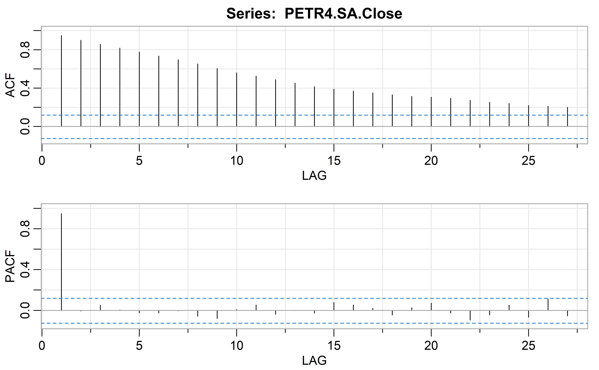
[,1] [,2] [,3] [,4] [,5] [,6] [,7] [,8] [,9] [,10] [,11] [,12] [,13]
ACF 0.95 0.90 0.86 0.82 0.78 0.73 0.69 0.65 0.60 0.56 0.52 0.49 0.45
PACF 0.95 -0.01 0.05 0.00 -0.02 -0.03 0.00 -0.06 -0.08 0.01 0.05 -0.04 0.00
[,14] [,15] [,16] [,17] [,18] [,19] [,20] [,21] [,22] [,23] [,24] [,25]
ACF 0.41 0.39 0.37 0.35 0.33 0.31 0.30 0.29 0.27 0.25 0.24 0.22
PACF -0.03 0.08 0.05 0.02 -0.04 0.03 0.07 -0.03 -0.09 -0.04 0.05 -0.07
[,26] [,27]
ACF 0.21 0.20
PACF 0.11 -0.05Box.test(PETR4.SA.Close, lag=20, type = "Box-Pierce")
Box-Pierce test
data: PETR4.SA.Close
X-squared = 2004.7, df = 20, p-value < 2.2e-16Box.test(PETR4.SA.Close, lag=20, type = "Ljung-Box")
Box-Ljung test
data: PETR4.SA.Close
X-squared = 2071.8, df = 20, p-value < 2.2e-16Vamos agora trabalhar com os log retornos das ações
Para obter os log retornos vamos usar uma função da biblioteca qrmtools.
library(qrmtools)
petr4.logret <- returns(PETR4.SA.Close, method="logarithmic")
head(petr4.logret) [,1]
2021-09-02 -0.016406072
2021-09-03 -0.010202242
2021-09-06 0.004925147
2021-09-08 -0.057959057
2021-09-09 0.021003388
2021-09-10 -0.006294277chartSeries(petr4.logret,theme="white")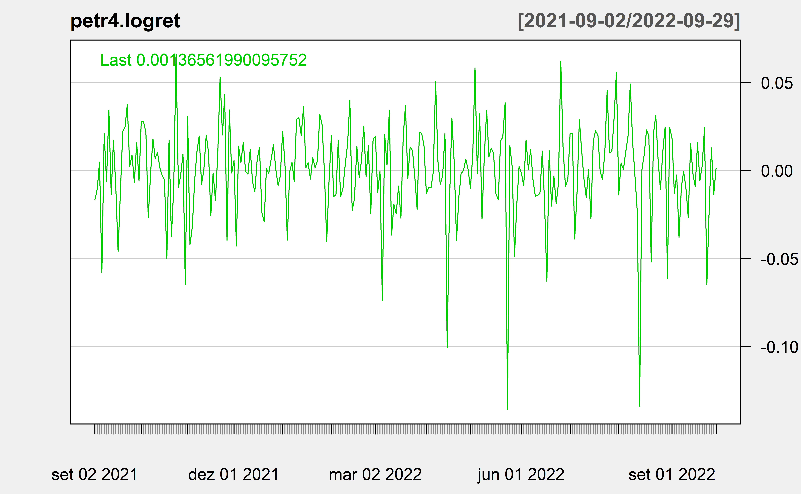
Esta série é um ruído branco?
Vamos usar o teste de Box-Pierce e Ljung-Box
acf2(petr4.logret)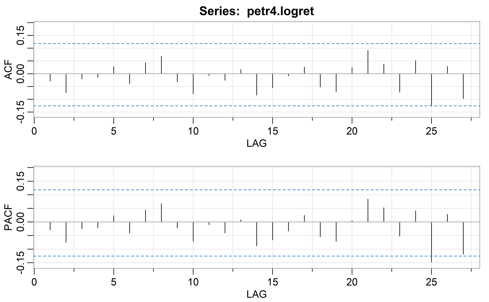
[,1] [,2] [,3] [,4] [,5] [,6] [,7] [,8] [,9] [,10] [,11] [,12] [,13]
ACF -0.03 -0.07 -0.02 -0.01 0.03 -0.04 0.04 0.07 -0.03 -0.08 -0.01 -0.03 0.02
PACF -0.03 -0.08 -0.03 -0.02 0.02 -0.04 0.04 0.07 -0.02 -0.07 -0.01 -0.04 0.01
[,14] [,15] [,16] [,17] [,18] [,19] [,20] [,21] [,22] [,23] [,24] [,25]
ACF -0.08 -0.06 -0.01 0.03 -0.05 -0.07 0.02 0.09 0.04 -0.07 0.05 -0.13
PACF -0.09 -0.07 -0.03 0.02 -0.05 -0.07 0.00 0.08 0.05 -0.05 0.04 -0.15
[,26] [,27]
ACF 0.03 -0.10
PACF 0.03 -0.12Box.test(petr4.logret, lag=20, type = "Box-Pierce")
Box-Pierce test
data: petr4.logret
X-squared = 11.561, df = 20, p-value = 0.9304Box.test(petr4.logret, lag=20, type = "Ljung-Box")
Box-Ljung test
data: petr4.logret
X-squared = 12.146, df = 20, p-value = 0.9109Vamos avaliar de outra forma
No teste anterior usamos somente o lag = 20 para testar a série. Vamos usar a biblioteca astsa que faz este teste para vários lags além de avaliar outras características da série.
sarima(petr4.logret,p=0,d=0,q=0)initial value -3.635431
iter 1 value -3.635431
final value -3.635431
converged
initial value -3.635431
iter 1 value -3.635431
final value -3.635431
converged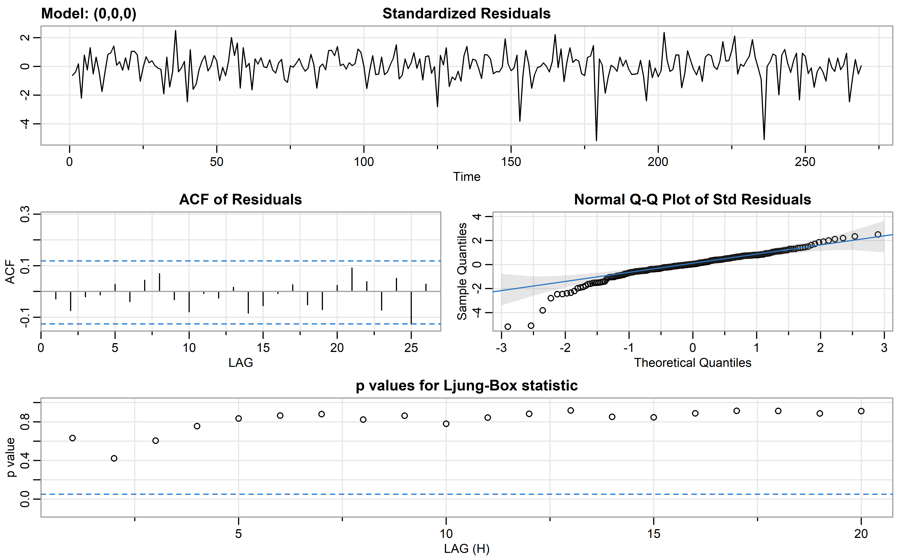
$fit
Call:
arima(x = xdata, order = c(p, d, q), seasonal = list(order = c(P, D, Q), period = S),
xreg = xmean, include.mean = FALSE, transform.pars = trans, fixed = fixed,
optim.control = list(trace = trc, REPORT = 1, reltol = tol))
Coefficients:
xmean
0.0003
s.e. 0.0016
sigma^2 estimated as 0.0006955: log likelihood = 596.24, aic = -1188.47
$degrees_of_freedom
[1] 268
$ttable
Estimate SE t.value p.value
xmean 3e-04 0.0016 0.1862 0.8524
$AIC
[1] -4.418115
$AICc
[1] -4.418059
$BIC
[1] -4.391389Podemos agragar valores diários de diversas formas
Para agregar valores de series temporais vamos usar a biblioteca xts
library(xts)
petr4.logret.sem <- apply.weekly(petr4.logret, sum)
first(petr4.logret.sem, "2 week") [,1]
2021-09-03 -0.02660831
2021-09-10 -0.03832480petr4.logret.men <- apply.monthly(petr4.logret, sum)
first(petr4.logret.men, "2 month") [,1]
2021-09-30 0.007002019
2021-10-29 -0.002942260Os log retornos seguem uma distribuição normal?
Vamos usar alguma ferrametas gráficas para avaliar os dados de log-retorno
mu <- mean(petr4.logret)
sigma <- sd(petr4.logret)
c(mu, sigma)[1] 0.0002996708 0.0264217221x <- sort(coredata(petr4.logret))
hist(x, breaks = "Sturges" , probability = TRUE)
lines(x, dnorm(x, mean = mu, sd = sigma), col = "red")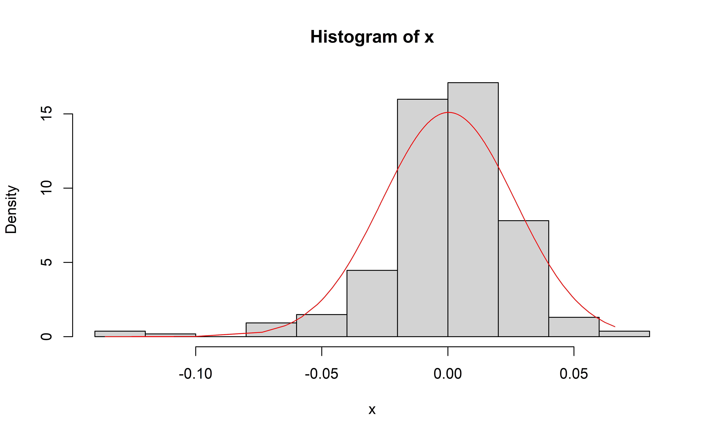
qqnorm(x)
qqline(x)
Outra avaliação Jarque-Bera
library(moments)
x <- sort(coredata(petr4.logret))
jarque.test(x)
Jarque-Bera Normality Test
data: x
JB = 367.04, p-value < 2.2e-16
alternative hypothesis: greaterE o log retorno semanal?
Vamos usar alguma ferrametas gráficas para avaliar os dados de log-retorno
mu <- mean(petr4.logret.sem)
sigma <- sd(petr4.logret.sem)
c(mu, sigma)[1] 0.001414236 0.052515186x <- sort(coredata(petr4.logret.sem))
hist(x, breaks = "Sturges" , probability = TRUE)
lines(x, dnorm(x, mean = mu, sd = sigma), col = "red")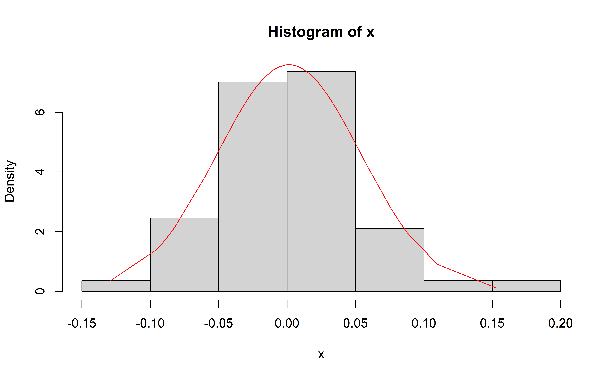
qqnorm(x)
qqline(x)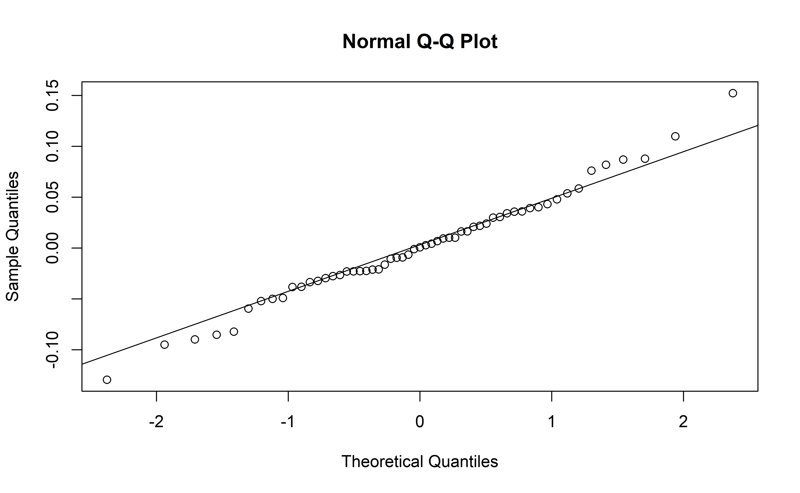
Outra avaliação Jarque-Bera
library(moments)
x <- sort(coredata(petr4.logret.sem))
jarque.test(x)
Jarque-Bera Normality Test
data: x
JB = 1.0108, p-value = 0.6033
alternative hypothesis: greaterVamos simular um processo AR(1)
Vamos usar as funções da biblioteca astsa.
par(mfrow=c(2,1))
# na expressão abaixo ~ é igual a um espaço e == é o igual
tsplot(sarima.sim(ar= .9, n=100), col=4, ylab="", main=(expression(AR(1)~~~phi==+.9)))
tsplot(sarima.sim(ar=-.9, n=100), col=4, ylab="", main=(expression(AR(1)~~~phi==-.9))) 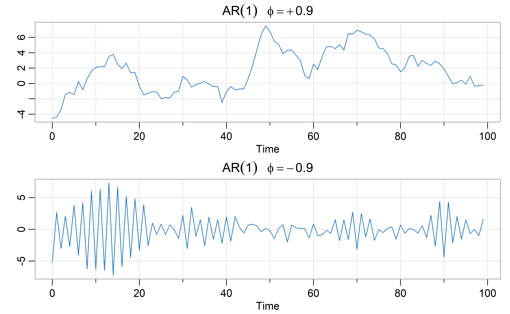
Vamos simular um processo MA(1)
Vamos usar as funções da biblioteca astsa.
par(mfrow=c(2,1))
tsplot(sarima.sim(ma= .9, n=100), col=4, ylab="", main=(expression(MA(1)~~~theta==+.9)))
tsplot(sarima.sim(ma=-.9, n=100), col=4, ylab="", main=(expression(MA(1)~~~theta==-.9))) 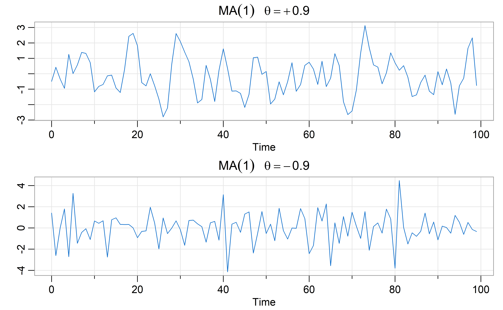
Vamos simular um AR(2)
Vamos usar outra função básica do R para simular um AR(2) para fazer a representação gráfica de um AR(2) através dos seus ACF e PACF.
acf <- ARMAacf(ar=c(1.5,-.75), ma=0, 24)
pacf <- ARMAacf(ar=c(1.5,-.75), ma=0, 24, pacf=T)
par(mfrow=c(1,2))
plot(acf, type="h", xlab="lag")
abline(h=0)
plot(pacf, type="h", xlab="lag")
abline(h=0)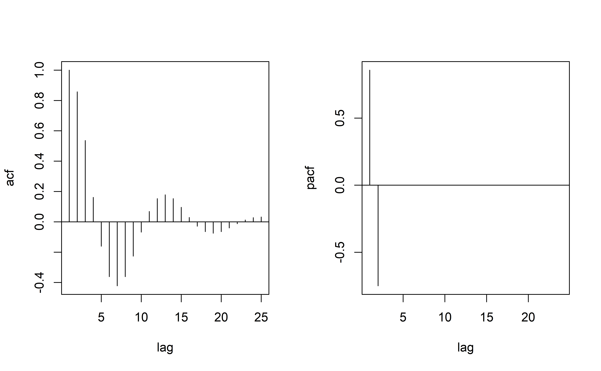
Vamos analisar dados de Recrutamento
Recrutamento (índice do número de novos peixes) por um período de 453 meses que se passaram ao longo dos anos 1950-1987. O recrutamento é vagamente definido como um indicador de novos membros de uma população para a primeira fase de vida em que a mortalidade natural se estabiliza perto dos níveis adultos.
Estes dados estão na biblioteca astsa.
Vamos usar uma parte para ajustar o modelo e depois vamos ver como ficam as previsões com relação aos resultados reais.
# library(astsa)
data(rec)
recr <- window(rec, start=c(1950,1), end=c(1985,9))
par(mfrow=c(2,1))
acf(recr, 24)
pacf(recr, 24)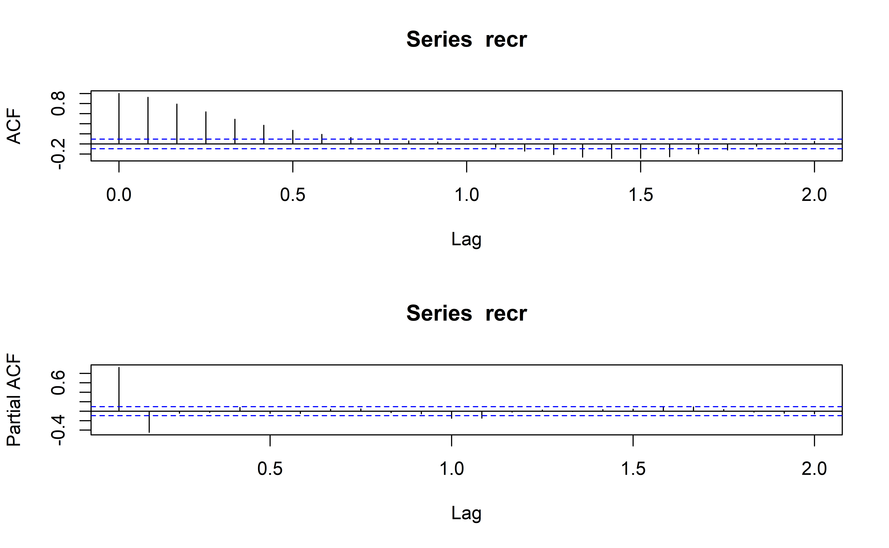
acf2(recr)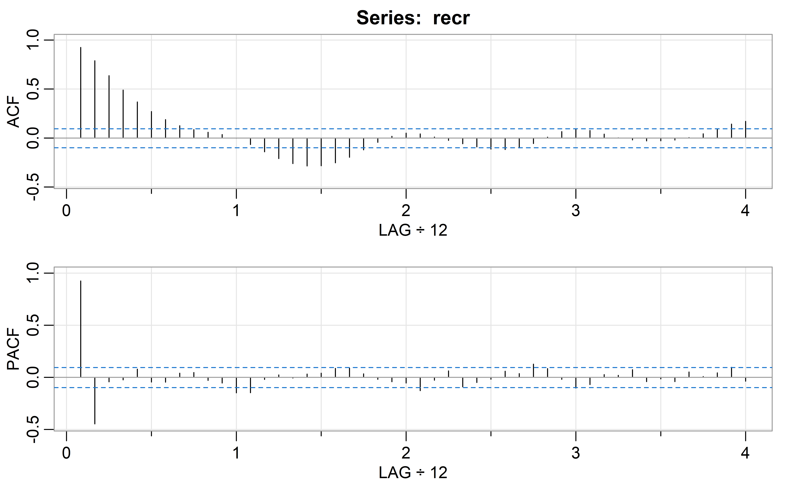
[,1] [,2] [,3] [,4] [,5] [,6] [,7] [,8] [,9] [,10] [,11] [,12] [,13]
ACF 0.92 0.79 0.64 0.49 0.37 0.27 0.19 0.13 0.09 0.06 0.04 0.00 -0.07
PACF 0.92 -0.45 -0.04 -0.02 0.08 -0.05 -0.05 0.04 0.05 -0.03 -0.06 -0.15 -0.15
[,14] [,15] [,16] [,17] [,18] [,19] [,20] [,21] [,22] [,23] [,24] [,25]
ACF -0.14 -0.21 -0.26 -0.29 -0.28 -0.25 -0.20 -0.12 -0.04 0.02 0.05 0.04
PACF -0.02 0.02 -0.01 0.03 0.04 0.09 0.09 0.03 -0.02 -0.04 -0.05 -0.13
[,26] [,27] [,28] [,29] [,30] [,31] [,32] [,33] [,34] [,35] [,36] [,37]
ACF 0.01 -0.02 -0.06 -0.09 -0.11 -0.12 -0.10 -0.06 0.01 0.07 0.09 0.08
PACF -0.03 0.06 -0.09 -0.05 -0.02 0.06 0.03 0.13 0.08 -0.02 -0.10 -0.07
[,38] [,39] [,40] [,41] [,42] [,43] [,44] [,45] [,46] [,47] [,48]
ACF 0.04 0.00 -0.02 -0.03 -0.03 -0.02 0.00 0.04 0.09 0.14 0.17
PACF 0.03 0.02 0.07 -0.04 -0.02 -0.04 0.05 0.01 0.04 0.10 -0.04Que tal um AR(2)
Aqui usando comandos básicos do R.
p <- 2
d <- 0
q <- 0
mod1 <- arima(recr,order=c(p,d,q),method="ML")
tsdiag(mod1)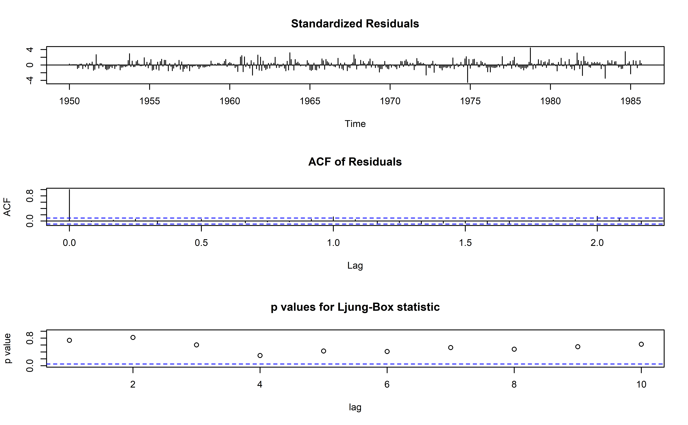
Previsões a partir do modelo ajustado
rec.pr <- predict(mod1, n.ahead=24)
inf <- rec.pr$pred + rec.pr$se
sup <- rec.pr$pred - rec.pr$se
tsplot(recr, type="o", ylab="recrutamento", xlim=c(1980,1988))
lines(rec.pr$pred, col="red", type="o")
lines(inf, col="blue", lty="dashed")
lines(sup, col="blue", lty="dashed")
lines(rec)
abline(h=coef(mod1)[names(coef(mod1))=='intercept'])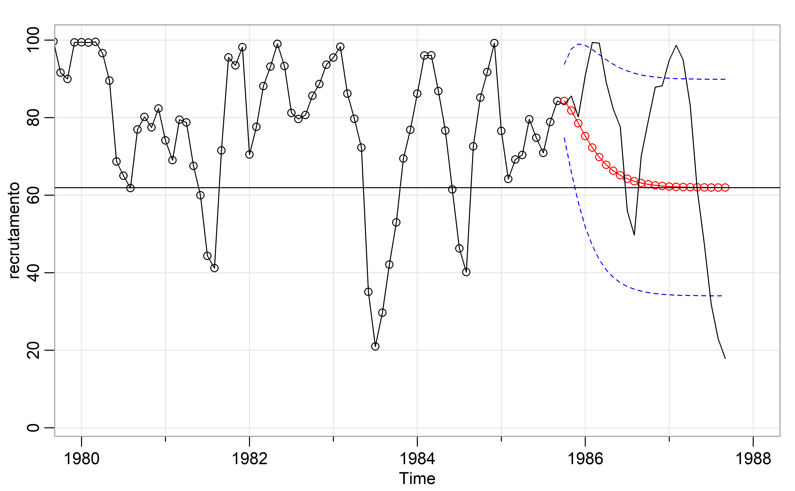
Usando a biblioteca ASTSA
p <- 2
d <- 0
q <- 0
sarima(recr,p=p,d=d,q=q, gg=TRUE, col=4)initial value 3.335343
iter 2 value 3.264072
iter 3 value 2.562334
iter 4 value 2.425870
iter 5 value 2.258615
iter 6 value 2.254532
iter 7 value 2.253817
iter 8 value 2.253804
iter 9 value 2.253802
iter 10 value 2.253799
iter 11 value 2.253799
iter 12 value 2.253799
iter 13 value 2.253798
iter 14 value 2.253797
iter 15 value 2.253797
iter 15 value 2.253797
final value 2.253797
converged
initial value 2.254327
iter 2 value 2.254322
iter 3 value 2.254320
iter 4 value 2.254319
iter 5 value 2.254319
iter 6 value 2.254319
iter 7 value 2.254319
iter 8 value 2.254318
iter 9 value 2.254318
iter 9 value 2.254318
iter 9 value 2.254318
final value 2.254318
converged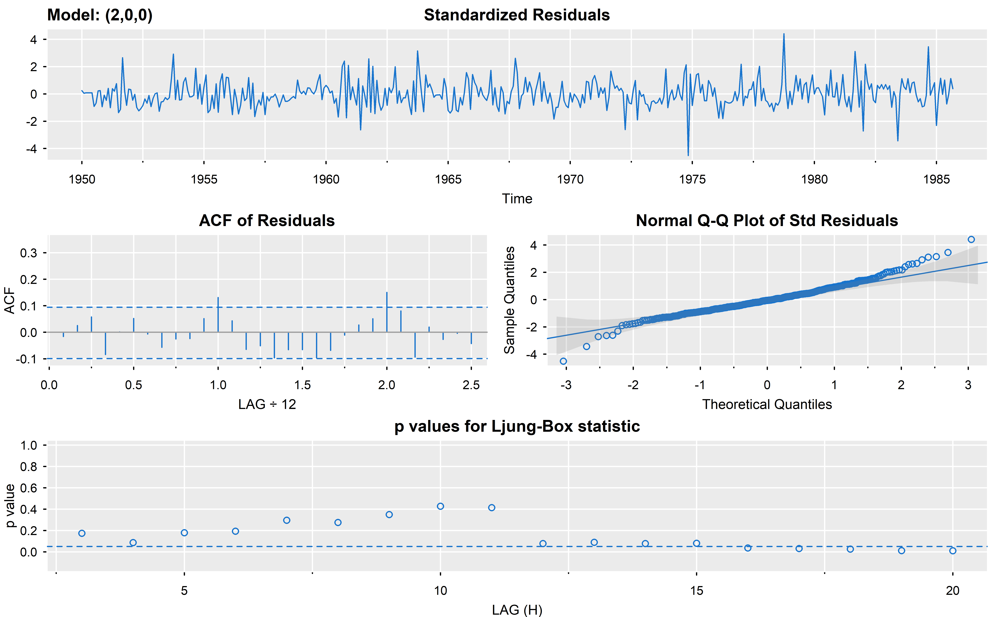
$fit
Call:
arima(x = xdata, order = c(p, d, q), seasonal = list(order = c(P, D, Q), period = S),
xreg = xmean, include.mean = FALSE, transform.pars = trans, fixed = fixed,
optim.control = list(trace = trc, REPORT = 1, reltol = tol))
Coefficients:
ar1 ar2 xmean
1.3418 -0.4516 61.9062
s.e. 0.0429 0.0429 4.1418
sigma^2 estimated as 90.29: log likelihood = -1575.83, aic = 3159.65
$degrees_of_freedom
[1] 426
$ttable
Estimate SE t.value p.value
ar1 1.3418 0.0429 31.2549 0
ar2 -0.4516 0.0429 -10.5159 0
xmean 61.9062 4.1418 14.9468 0
$AIC
[1] 7.365161
$AICc
[1] 7.365293
$BIC
[1] 7.40303sarima.for(recr, n.ahead=24, p=2, d=0, q=0, plot=TRUE)$pred
Jan Feb Mar Apr May Jun Jul Aug
1985
1986 75.20659 72.25139 69.78139 67.80161 66.26051 65.08665 64.20747 63.55787
1987 62.19281 62.10513 62.04370 62.00087 61.97114 61.95058 61.93643 61.92672
Sep Oct Nov Dec
1985 84.27178 81.81321 78.51797
1986 63.08323 62.73971 62.49309 62.31731
1987 61.92009
$se
Jan Feb Mar Apr May Jun Jul
1985
1986 23.410705 25.288870 26.425340 27.090863 27.469631 27.679844 27.793943
1987 27.917314 27.918328 27.918821 27.919058 27.919172 27.919226 27.919251
Aug Sep Oct Nov Dec
1985 9.502359 15.901825 20.424515
1986 27.854666 27.886424 27.902778 27.911083 27.915248
1987 27.919263 27.919268 lines(rec)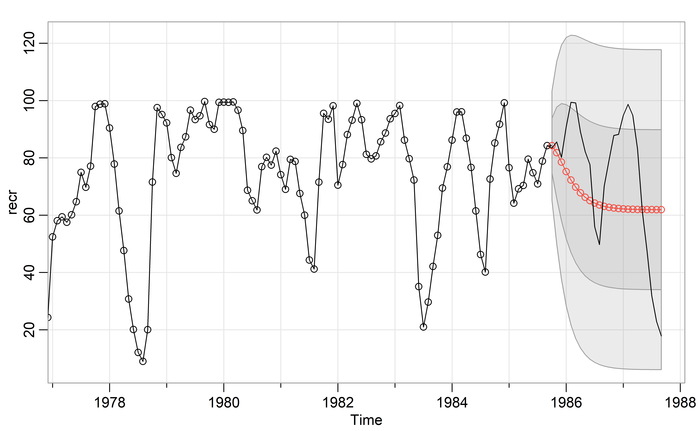